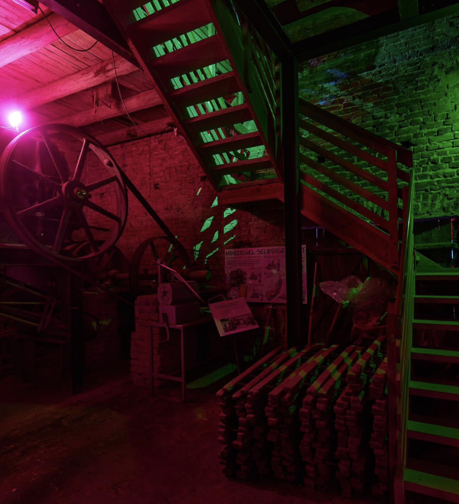
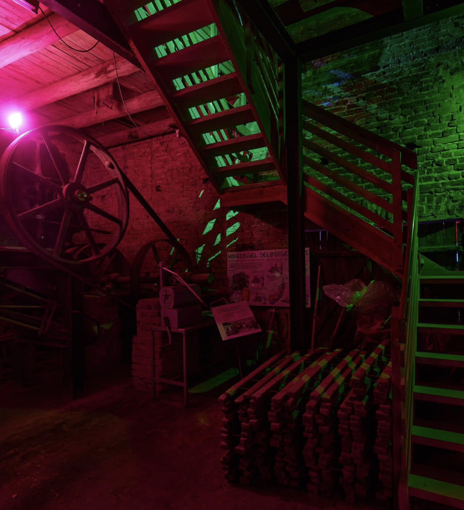

The audiovisual installation in the machine room of the LWL-Industriemuseum Ziegelei Lage. The relationship between man and machine is spatially visualized with projection mapping, technology, and light installations over 3 floors around the edge mill. The automation of work, the digitalization of our lives. Computers do almost everything for us. How do machines communicate with each other? The pan grinder, the most important machine in the room, served as a grinder for the clay that was processed for the bricks and is recontextualized by the projected animations and used as the main projection surface. The metaphor of the dark factory - the abandoned factory - an image of the future that already seems to be a reality today, continues to advance. Machines will increasingly displace people from jobs for which society no longer has any use. The future of work will be determined by the social impact of digitalization. The old brickworks in Lage - now an industrial museum - is something special in its experience as a media space, as this factory already represents a dark factory in the broader sense. Displaced by technical progress and automation, it is no longer in operation and is a reflection of the past. By projecting a future working perspective onto the environment of a disused industry, the Alte Ziegelei is awakening in the digital age and becoming a smart factory.
Watch @Machina
Idea: Fiona Giljohann
Conception: Fiona Giljohann, Regina Herdt, Katharina Meyer
Concept design: Katharina Meyer, Fiona Giljohann, Regina Herdt
Animation: Katharina Meyer, Regina Herdt, Fiona Giljohann
3D: Fabian
Storyboard & Animatic: Katharina Meyer
Sound: Fiona Giljohann, (Fabian Tellbroeker), Antonia Schmidt
Light: Fiona Giljohann
Technology: Fiona Giljohann, Regina Herdt, Katharina Meyer, Rafael Torezo, Kim Groche, Benjamin Hohenheiser
Photography: Regina Herdt, Rafael
Videography: Fiona Giljohann, Rafael
Layout: Fiona Giljohann
Editing: Katharina Meyer
Logistics: Regina Herdt
Organization: Fiona Giljohann, Katharina Meyer
Supervisor: Claudia Rohrmoser
Location: LWL Industriemuseum Minden Alte Ziegelei
Collaboration: Futur21
Sponsors: Futur21, LVR,
 
